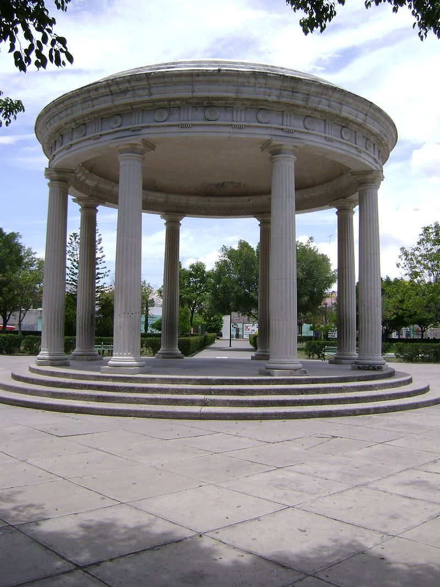
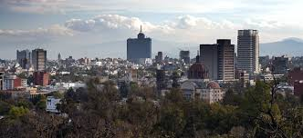
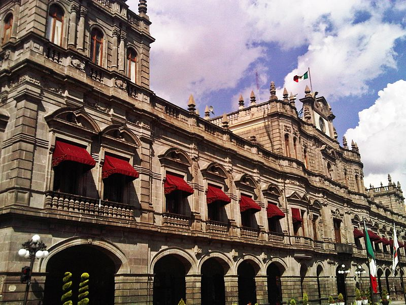
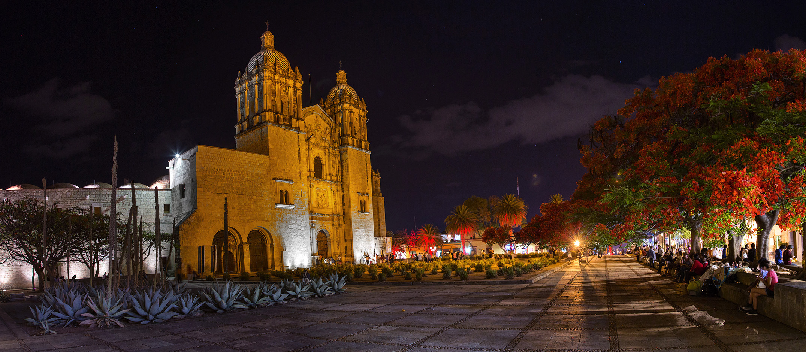

Tehuacan
Tehuacán Aunque la Plantilla:Etimología mas aceptada es. Estudios mas serios indican que es lugar de gatos de monte o lugar de serpiente de piedra, (esto por los tecoates que surcan aun algunas partes de la ciudad. es uno de los 217 municipios que conforman al estado mexicano de Puebla. La población según la INEGI hasta el 2015 es de 319 375 habitantes, siendo la segunda ciudad mas poblada del estado de Puebla.5 Es parte de la zona metropolitana de Tehuacán en conjunto con el municipio de Santiago Miahuatlán.
CDMX
La Ciudad de México es la capital de la República Mexicana, sede de los poderes federales y la ciudad más poblada del país. Su historia es centenaria y sus habitantes son gente comprometida con el desarrollo, bienestar, diversidad, medio ambiente y crecimiento económico.
Puebla
Puebla es una de las 32 entidades federativas de México. Se localiza en el centro oriente del territorio mexicano. Colinda al este con el estado de Veracruz, al poniente con los estados de Hidalgo, México, Tlaxcala y Morelos y al sur con los estados de Oaxaca y Guerrero. Puebla no tiene salida al mar y presenta un relieve sumamente accidentado. Su superficie es de 34.306 km², en la cual viven más de cinco millones de personas, que convierten a este estado en el quinto más poblado del país. La capital del estado es Puebla de Zaragoza, la cuarta ciudad mexicana por el número de sus habitantes.
Oaxaca
Oaxaca (pronunciación culta:6 oajáka [oa'xaka], pronunciación coloquial: guajáka [wa'haka] es una de las 32 entidades federativas de la república mexicana. Se ubica al sur del país, en el extremo suroeste del istmo de Tehuantepec. Colinda con Guerrero al oeste, con Puebla al noroeste, Veracruz hacia el norte, Chiapas al este y hacia el sur posee casi 600 km de costa en el océano Pacífico. Por su extensión, es el quinto estado más grande del país y ocupa el 4,8 % de su superficie.